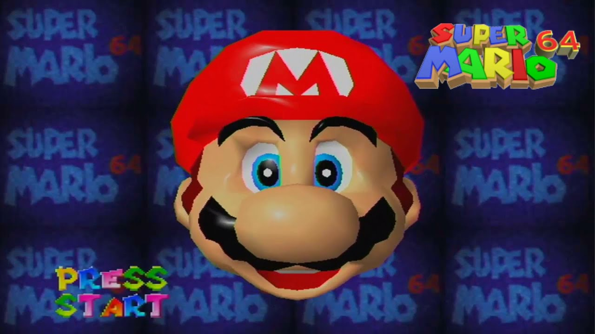

В мире видеоигр мини-игры бывают самых разных форм и размеров. Некоторые устанавливают стандарты для мини-игр по всему миру или настолько популярны, что создают свою собственную отдельную игру, в то время как другие имитируют сценарии из реальной жизни, такие как попадание за стол для блэкджека в казино. Даже многие из новейших игр на рынке содержат мини-игры, что подтверждает тот факт, что мини-игры любят геймеры во всем мире. Давайте перейдем к нашему списку лучших мини-игр, которые когда-либо существовали.
Установка стандарта мини-игр
Super Mario 64, выпущенная еще в 1996 году, была одной из самых влиятельных и лучших видеоигр своего времени благодаря тому, как она произвела революцию в мире 3D-игр, сделала простую графику необычной и, конечно, воплотила в жизнь огромный мир мини-игр.
Кроме того, она возродила франшизу Mario и породила множество эпических игр, в том числе превосходную феерию мини-игр Mario Party, которая выпустила более 11 сиквелов и принесла бесчисленное количество дополнительных доходов от спин-оффов.
Автономная игра, порожденная мини-игрой
Некоторые видеоигры настолько хорошо скомпонованы, что даже их мини-игры могут сами порождать полноценные автономные игры. Так обстоит дело с The Witcher III, и это очень популярная мини-игра Gwent. Эта мини-игра по сбору карт проходит по всему игровому миру,а уникальные карты можно найти во многих деревнях. Поначалу это кажется побочным квестом, но быстро становится настолько захватывающим, что становится основной причиной поиска новых областей.
Автономная игра Gwent: The Witcher Card Game не менее увлекательна, хотя и немного сложнее, чем нужно. Тем не менее, эту отдельную игру, порожденную мини-играми, не следует исключать из вашей игровой колоды, ведь многие фанаты считают ее одной из лучших мини-игр на сегодняшний день.
Мини-игры в казино
Настоящее казино можно представить себе как место, где мини-игры будут везде, куда бы вы ни посмотрели, поэтому неудивительно, что они тоже пробились на игровую сцену. Несмотря на то, что есть онлайн-казино, в которых размещено множество игр казино, привнести то же чувство в видеоигру — настоящее достижение.
Обсуждая мини-игры в казино, никто не станет спорить с величием «Diamond Casino» в Grand Theft Auto V. Этот полноценный мир казино позволяет вам играть во всевозможные стандартные игры казино, аналогичные играм в настоящем онлайн-казино.
Популярная в 2018 году игра Red Dead Redemption представляет собой новый взгляд на стандартные настольные игры в стиле казино с мини-играми, такими как блэкджек, покер и кости. Однако, будучи игрой на тему Дикого Запада с множеством бандитов и негодяев за столом, вы наверняка столкнетесь со своей долей альтернативных соревновательных сценариев, таких как игра с ножом или армрестлинг.
Мини-игры нового века
Даже несмотря на то, что видеоигры сегодня продвинуты, кажется, что для мини-игр ниша будет всегда.
Astro’s Playroom — одна из новейших и высоко ценимых мини-игр. Эта игра поставляется
бесплатно с новой
Playstation 5,
и она была названа критиками одной из лучших бесплатных игр.
Еще есть Minecraft — возможно, самая универсальная видеоигра всех времен, — которая позволяет игрокам создавать свои собственные мини-игры. Это открывает перед вами неизведанный мир возможностей, а некоторые творческие и очень талантливые игроки создали поистине потрясающие мини-игры со всевозможными сценариями, начиная от буквально бегства от смерти в Death Run до набора очков, выполняя задания паркура.

Какими бы динамичными, реалистичными или просто глупыми ни были мини-игры, мы все равно хотим в них играть. Они могут стать желанным отвлечением от больших текущих миссий или быть единственной целью самой игры, но остается одно — мини-игры никуда не денутся.